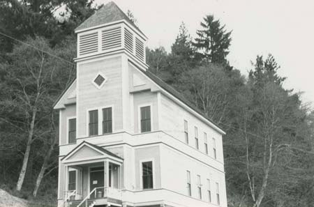
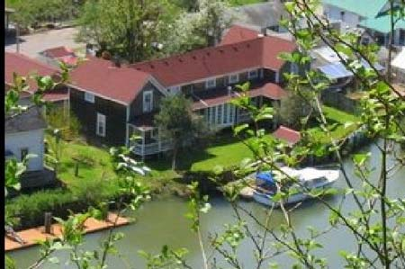
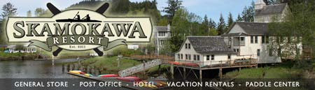

Local Attractions
 Redmen Hall is a historic building and home of The RiverLife Interpretive Center. It was built in 1894 and was originally used as a school.
 Twin Gables B & B has New England Charm and Northwest Hospitality. Check them out if your into a more comfortable stay.
 Skamokawa Resort has a general store, hotel, Post Office and dock. A comfortable place to stay.
Columbia River Kayaking can guide you on your next river adventure. Come explorer a part of the Lewis and Clark trail with CRK.
Wahkiakum County has much to offer. Check out the Cathlamet Chamber of Commerce website to see all this county has to offer.